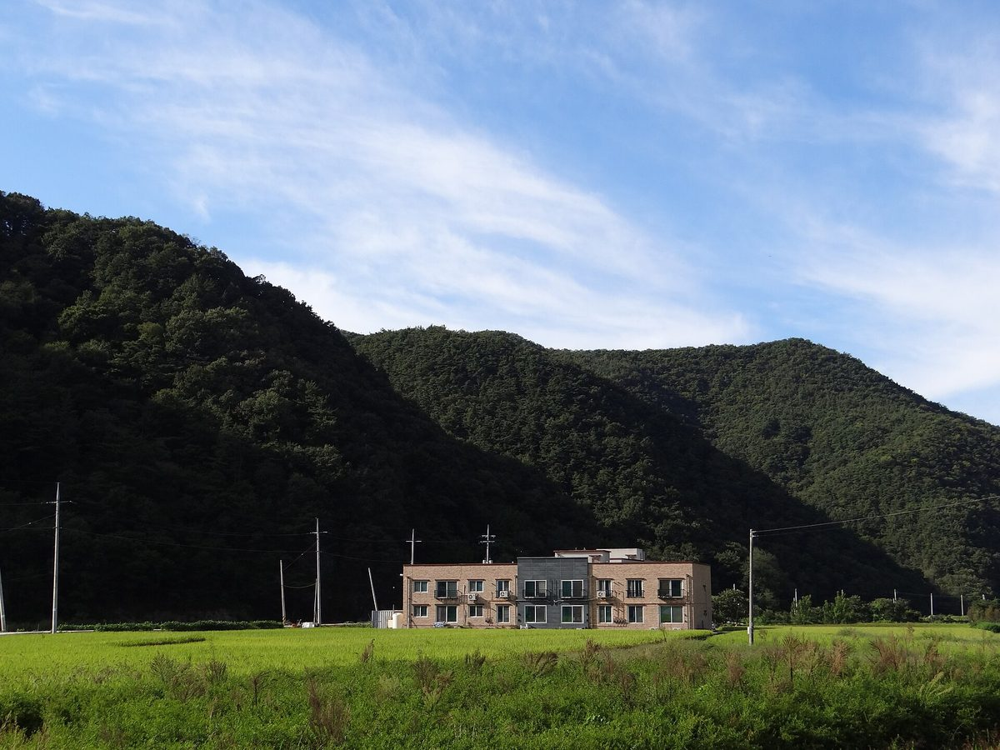

완주 주민 202명, 신정읍~신계룡 송전선로 입지선정위 결의 무효 확인 소송 3차 변론…주민대표 구성 쟁점

원고 측 "주민대표 30명 중 19명이 그 지역에 살지 않는 지방의원" 주장, 한전은 위원장 선출 영상 대신 사진 제출 방침…4차 변론 11월 5일
수도권 반도체 클러스터로 전기를 보낼 345㎸ 신정읍~신계룡 초고압 송전선로의 입지 선정이 적법했는지를 다투는 재판이 이어지고 있다. 전북 완주군 소양면 주민 202명이 한국전력공사를 상대로 낸 입지선정위원회 결의 무효 확인 소송의 3차 변론이 22일 전주지법에서 열렸으며, 판결은 아직 나오지 않았다. 원고 측은 2023년 12월 22일 1단계 최적 경과대역 결정에 절차와 내용 모두 하자가 있다고 주장한다. 원고 측 대리인 권영국 변호사는 한전 내부 기준이 위원의 3분의 2 이상을 주민대표로 채우도록 했는데, 위원 50명 가운데 주민대표로 분류된 30명 중 19명이 그 지역에 살지 않는 지방의회 의원이라고 주장했고, 위원장 선출과 운영규범 제정 과정이 불투명했으며 결의 뒤에야 주민에게 결과를 알렸다는 점도 문제 삼았다. 한전 측은 위원장 선출 자료를 영상이 아닌 사진으로 내겠다며 원고 측의 영상 제출 요구를 보안상 이유로 거절했다. 한편 한전이 충남 금산군 진산면 설명회에서 대둔산 우회·지중화를 검토하겠다고 밝히자 대둔산을 함께 둔 완주군과 논산시에서는 피해가 옮겨 올 수 있다는 우려가 나오고 있으며, 재판부는 11월 5일 4차 변론을 연다.
시민에너지 관점
주민대표 몫 30명 가운데 19명이 그 지역에 살지 않는 사람이었다는 원고 측 주장이 법정에서 사실로 인정될지는 지켜봐야 하지만, 이런 다툼이 생긴다는 것 자체가 송전망 입지 결정에 주민이 제대로 참여하지 못하고 있다는 신호로 보인다. 국가 전력망은 누군가는 받아들여야 한다는 반론이 있을 수 있으나, 피해를 지는 주민이 결정에서 빠지면 노선을 옮길 때마다 이웃 지역끼리 갈등이 번질 뿐이다. 먼 곳에서 대규모로 만들어 긴 송전선으로 실어 나르는 구조에 기대기보다, 쓰는 곳 가까이에서 지역 주민이 주인이 되는 재생에너지를 늘려야 송전선 부담 자체를 줄일 수 있다. 입지선정위원회부터 실제로 그 땅에 사는 주민이 다수가 되도록 기준을 바로 세워야 한다.
출처: 경향신문 2026-10-22 김창효 원문 보기
完州の住民202人、新井邑～新鶏龍送電線路の立地選定委員会決議の無効確認訴訟で第3回弁論…住民代表の構成が争点
原告側「住民代表30人のうち19人がその地域に住んでいない地方議員」と主張、韓電は委員長選出の映像の代わりに写真を提出する方針…第4回弁論は11月5日
首都圏の半導体クラスターに電力を送る345kV新井邑（シンジョンウプ）～新鶏龍（シンゲリョン）超高圧送電線路の立地選定が適法だったかを争う裁判が続いている。全羅北道完州郡所陽面の住民202人が韓国電力公社（韓電）を相手取って起こした立地選定委員会決議の無効確認訴訟の第3回弁論が22日、全州地裁で開かれ、判決はまだ出ていない。原告側は、2023年12月22日の第1段階の最適経過帯域の決定に手続きと内容の両面で瑕疵があると主張している。原告側代理人のクォン・ヨングク弁護士は、韓電の内部基準では委員の3分の2以上を住民代表とするよう定めているのに、委員50人のうち住民代表に分類された30人中19人がその地域に住んでいない地方議会議員だと主張し、委員長選出と運営規範の制定過程が不透明で、決議の後になって住民に結果を知らせた点も問題視した。韓電側は委員長選出の資料を映像ではなく写真で提出するとし、原告側の映像提出の要求を保安上の理由で拒んだ。一方、韓電が忠清南道錦山郡珍山面の説明会で大芚山（テドゥンサン）の迂回・地中化を検討すると明らかにしたことで、大芚山を共有する完州郡と論山市では被害が移ってくるのではとの懸念が出ており、裁判所は11月5日に第4回弁論を開く。
市民エネルギーの視点
住民代表枠30人のうち19人がその地域に住んでいない人だったという原告側の主張が法廷で事実と認められるかは見守る必要があるが、こうした争いが起きること自体、送電網の立地決定に住民がきちんと参加できていない兆しとみられる。国の電力網は誰かが受け入れなければならないという反論もありうるが、被害を負う住民が決定から外れれば、ルートを動かすたびに隣接地域同士の対立が広がるだけだ。遠くで大規模に発電して長い送電線で運ぶ構造に頼るより、使う場所の近くで地域住民が持ち主となる再エネを増やしてこそ、送電線の負担そのものを減らせる。立地選定委員会から、実際にその土地に住む住民が多数を占めるよう基準を正すべきだ。
出典: Kyunghyang Shinmun 2026-10-22 Kim Chang-hyo 原文を読む
完州202名居民就新井邑至新鸡龙输电线路选址委员会决议无效确认诉讼进行第三次辩论…居民代表构成成为焦点
原告方称30名居民代表中有19名是不住在当地的地方议员，韩电拟以照片代替委员长选举录像提交…第四次辩论定于11月5日
围绕向首都圈半导体集群输电的345kV新井邑至新鸡龙特高压输电线路选址是否合法的诉讼仍在进行。全罗北道完州郡所阳面202名居民起诉韩国电力公社（韩电）、要求确认选址委员会决议无效，该案第三次辩论于22日在全州地方法院举行，尚未作出判决。原告方主张，2023年12月22日作出的第一阶段最优走廊带决定在程序和实体上均存在瑕疵。原告代理律师Kwon Young-guk称，韩电内部标准规定委员中三分之二以上应为居民代表，但50名委员中被归为居民代表的30人里有19人是不住在当地的地方议会议员；原告方还指出委员长选举和运营规范制定过程不透明，且在决议之后才向居民通报结果。韩电方面表示将以照片而非录像提交委员长选举资料，并以安全为由拒绝了原告方提交录像的要求。另一方面，韩电在忠清南道锦山郡珍山面说明会上表示将研究绕开大芚山和地下化方案后，与锦山共享大芚山的完州郡和论山市担心损害会转移过来；法院将于11月5日举行第四次辩论。
市民能源视角
居民代表名额30人中有19人不住在当地的原告方主张能否在法庭上被认定为事实仍有待观察，但这类纠纷本身就表明，居民未能真正参与输电网选址决策。或许有人会说国家电网总得有人接受，但如果承受损害的居民被排除在决策之外，每次调整线路只会让相邻地区之间的冲突蔓延。与其依赖在远处大规模发电、再用长距离输电线运送的结构，不如在用电地附近增加由当地居民当主人的可再生能源，这样才能从根本上减轻输电线路的负担。应当从选址委员会开始重新确立标准，让真正生活在那片土地上的居民占多数。
来源: Kyunghyang Shinmun 2026-10-22 Kim Chang-hyo 查看原文
202 Wanju residents hold third hearing in suit to void siting committee decision on Sinjeongeup-Singyeryong power line, with resident-representative makeup at issue
Plaintiffs claim 19 of 30 resident representatives were local councillors who do not live in the area; KEPCO plans to submit photos instead of video of the chair's election; fourth hearing set for Nov. 5
A court battle over whether the route of the 345 kV Sinjeongeup-Singyeryong extra-high-voltage transmission line, which would carry power to the semiconductor cluster in the Seoul metropolitan area, was chosen lawfully is continuing. The third hearing in a suit filed by 202 residents of Soyang-myeon in Wanju County, North Jeolla, against Korea Electric Power Corp. (KEPCO), seeking confirmation that a siting committee's decision is void, was held at the Jeonju District Court on the 22nd; no ruling has been issued. The plaintiffs argue that the first-stage decision on the optimal corridor on December 22, 2023, was flawed in both procedure and substance. Their lawyer, Kwon Young-guk, claimed that although KEPCO's internal rules require at least two-thirds of committee members to be resident representatives, 19 of the 30 members classed as resident representatives on the 50-member committee were local council members who do not live in the affected area, and the plaintiffs also took issue with an opaque process for electing the chair and adopting operating rules, and with residents being told of the outcome only after the vote. KEPCO said it would submit material on the chair's election as photos rather than video, refusing the plaintiffs' request for the footage on security grounds. Meanwhile, after KEPCO told a briefing in Jinsan-myeon, Geumsan County, South Chungcheong, that it would consider routing around Mt. Daedun or burying the line, concerns have arisen in Wanju and Nonsan, which share the mountain, that the burden could shift to them; the court will hold its fourth hearing on November 5.
Citizen Energy View
Whether the court will accept the plaintiffs' claim that 19 of the 30 resident-representative seats went to people who do not live in the area remains to be seen, but the very existence of such a dispute appears to signal that residents are not taking real part in decisions on where grid lines go. Some may argue that someone has to accept the national grid, yet if the residents who bear the harm are left out of the decision, every rerouting simply spreads conflict between neighbouring communities. Rather than relying on a system that generates power at scale far away and hauls it over long lines, expanding renewable energy owned by local residents close to where it is used is what can reduce the need for such lines in the first place. The rules should be fixed starting with the siting committees themselves, so that people who actually live on the land make up the majority.
Source: Kyunghyang Shinmun 2026-10-22 Kim Chang-hyo Read the original